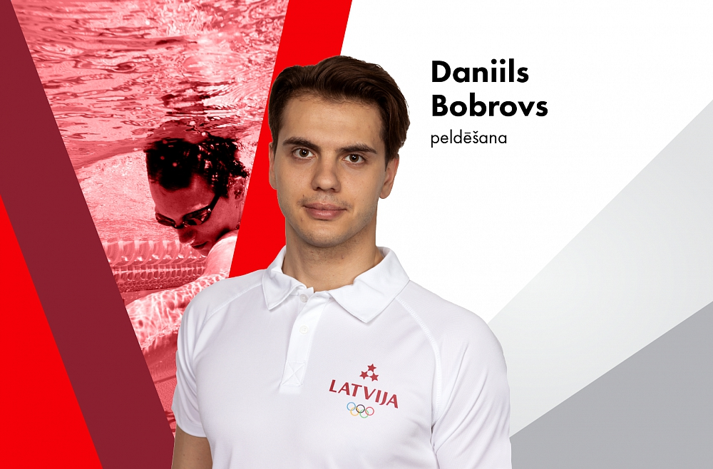

Šobrīd viens no Latvijas pārstāvjiem uz Olimpiskajām spēlēm ir Daniils Bobrovs, kurš piekrita sniegt interviju, kur dalās ar savu pieredzi, domām un mērķiem.
Olimpietis Daniils Bobrovs dalījās viedoklī par jauno peldētāju paaudzi un viņu prasmēm. "Izvēloties sporta karjeru, man nācās daudz upurēt" teica olimpietis.

1.Kā Jūs sākāt nodarboties ar peldēšanu?
Bērnībā mani vecāki sūtīja uz peldēšanu, lai uzlabotu veselību, bet pēc kāda laika treneris pamanīja, ka man labi veicas un ieteica vecākiem, lai es sāku nodarboties peldēšanas pulciņā,vecāki piekrīta, jo man patīka peldēt un peldēšana neliekas traumējoša.
2.Vai Jums bija kaut kas jāupurē savas sporta karjeras labā, vai Jūs nožēlojiet par to?
Bija brīži, kad bija jāizdara izvēles. Izvēloties sporta karjeru, man nācās daudz upurēt, piemēram, bija jāziedo brīvais laiks, socializēšanās ar draugiem, jāizlaiž interesanti pasākumi treniņu vai sacensību dēļ. Bet es nenožēloju, jo tā bija mana izvēle.
3.Kā sanāca apvienot mācības ar treniņiem?
Godīgi sakot, mācoties skolā, bija diezgan grūti visu apvienot kopā, bet par laimi bija saprotoši skolotāji, lai gan bija arī pretī. Studējot augstskolā bija vieglāk, jo augstskolā pašam vajadzēja atrisināt savas problēmas un izdarīt izvēli vienā vai otrā virzienā. Man izdevās visu apvienot diezgan labā proporcijā, arī uzsāku strādāt un tas vispār bija kaut kas neiedomājams. Bet par laimi pabeidzu gan skolu, gan augstskolu.
4.Nosauciet savus mīļākos peldēšanas stilus.
1.Brass
2.Brīvais stils
3.Tauriņstils
4.Mugura.
5.Kāds ir Jūsu tagadējais mērķis peldēšanā?
Kvalificēties nākamajai olimpiādei 2024. gadā Parīzē un tur uzrādīt savu labāko rezultātu, uzlabojot treniņu procesu un garīgo sagatavotību.
6.Kā Jūs redzat Latvijas peldētāju izaugsmi savas karjeras laikā?
Pēdējos gados peldēšanas līmenis Latvijas peldētāju (īpaši junioru) vidū ir ļoti audzis un turpina uzlaboties.
7.Kā Jūs gatavojāties Olimpiskajām spēlēm? Pastāstiet par savu treniņu grafiku tajā laikā.
Gatavošanās Olimpiskajām spēlēm laikā tika attīstīta peldēšanas tehnika, uzturēta un uzlabota fiziskā sagatavotība. Tieši pirms spēlēm bijām viduskalnu nometnē, kur galvenokārt tika likts uzsvars uz sacensību aktivitātēm: ātrums, cikls, temps utt. Grafiks bija standarta :divas peldēšanas sesijas un viens kadrio (vai trenažieruzāle), kur 7. diena bija atpūta.
8.Kāda bija sacensību atmosfēra Olimpiskajās spēlēs, ar ko viņa atšķīrās no Latvijas mēroga sacensībām?
Patiesībā nav lielas atšķirības, neņemot vērā visur esošās emblēmas un banerus ar Olimpisko spēļu simbolu attēlu, ir lielāka atšķirība garīgajā uztverē, ir grūti atrast vārdus, lai to aprakstītu, kā daži saka, to ir nepieciešams, sajust.
9.Kādu padomu Jūs dotu jaunajai peldētāju paaudzei?
Tehnika peldēšanā ir tikpat svarīga kā fiziskā sagatavotība, tāpēc, lai sasniegtu augstus rezultātus, ir jābūt ne tikai fiziski sagatavotam, bet arī jāpārdomā visas tehnikas nianses.